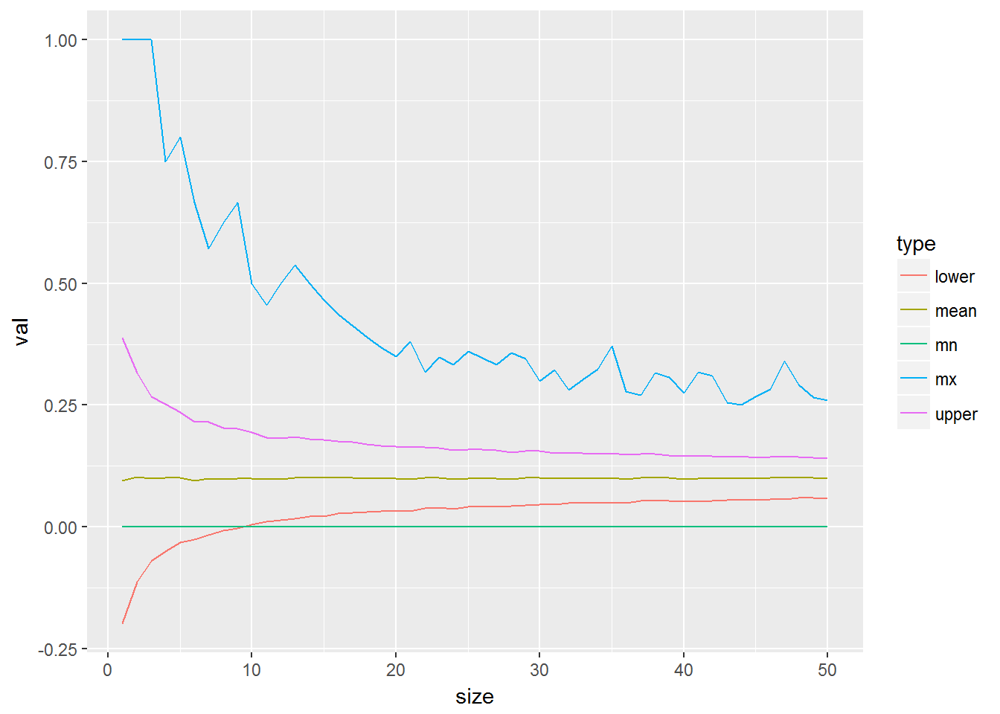
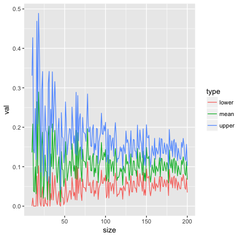
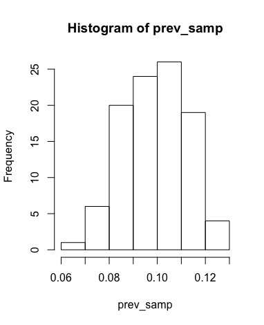
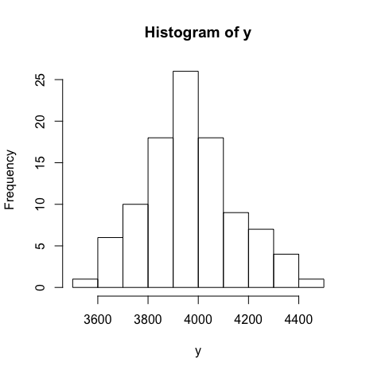
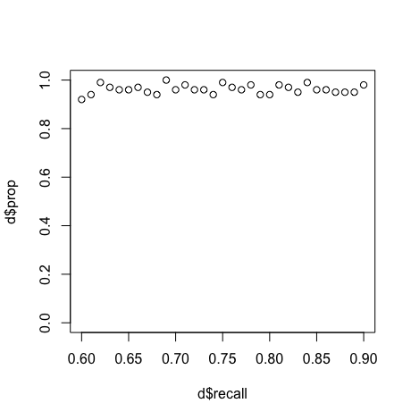

In the world of eDiscovery knowing what your recall is fairly important. Not just the recall of a trained model on a known test set but also on the actual population of documents that have been classified. This task is non trivial and can be fairly laborious.
The adequacy of an eDiscovery production has traditionally been established by using random sampling to estimate recall, but that requires reviewing approximately 400/prevalence documents, which can be burdensome when prevalence is low.
Let's say we have a corpus of 1000 documents.
library(tidyverse)
library(binom)
num_docs <- 1000Prevalence is the actual number of responsive documents in the corpus. It is a number from 0 to 1, which is also known as richness or yield.
prevalence <- .1Responsive documents are those that are relavent to a particular request. Recall is the percentage of found responsive items.
tp / (tp + fn)Precision is the percentage of found items that are responsive.
tp / (tp + fp)The discard set or negatives are the items that have not been reviewed. The proportion of the discard set that is responsive is known as elusion or the false omission rate. This can be confirmed to be below a certain level by reviewing a random set and having none of them actually being responsive.
recall (R), elusion (E) and prevalence (P) relationshiop
Elusion = Prevalence * (1 - Recall) / (1 - (Prevalence / Precision) * Recall)For a more complete look into this problem have a look at this link.
Some process will return a collection of documents, these are the responsive docs. We can generate a random sample that is close to prevalence
doc <- sample(c(0, 1), num_docs, replace = T, prob = c(1 - prevalence, prevalence))But we actually want to force this to be exact.
doc <- c(rep(1, num_docs * prevalence), rep(0, num_docs * (1 - prevalence)))We also dont want them to have all the ones in begining followed by all of the zeros. We can shuffle them around to overcome this issue.
doc <- sample(doc)Just check that it is what we think it is.
mean(doc) == prevalence## [1] TRUEIterate over number pulled
# Function to sample docs.
gen_set <- function(n) sample(doc, n)
df <- tibble(size = numeric(), mean = numeric(), std = numeric())
for (i in 1:50) {
res <- sapply(1:2000, function(x) mean(gen_set(i)))
df <- bind_rows(df, tibble(size = i,
mean = mean(res),
std = sd(res),
mx = max(res),
mn = min(res)))
}
df %>% mutate(upper = mean + std, lower = mean - std) %>%
select(-std) %>% gather(type, val, -size) %>%
ggplot(aes(x = size, y = val, colour = type)) + geom_line()
We know the actual prevalence. Can we determine how valid this all is.
bn <- data.frame(size = numeric(), mean = numeric(), upper = numeric(),
lower = numeric())
for (i in 1:200) {
x <- gen_set(i)
y <- binom.confint(x = sum(x), n = i, tol = 1e-8) %>%
filter(method == 'bayes')
bn <- bind_rows(bn, tibble(size = i, mean = y$mean, y$upper, y$lower))
}
bn %>% select(size, mean, upper = 'y$upper', lower = 'y$lower') %>%
gather(type, val, -size) %>%
ggplot(aes(x = size, y = val, colour = type)) + geom_line()
Where does the 400 come from above? Sample size https://www.qualtrics.com/blog/determining-sample-size/.
90% – Z Score = 1.645
95% – Z Score = 1.96
99% – Z Score = 2.576
(Z-score)2 * StdDev * (1-StdDev) / (margin of error)2
(1.96)^2 .5 * (1 - .5) / (.05)^2
(1.96)^2 * .25 / (.05)^2 = 384.16We would say we need a sample of 385, always round, or go with 400 which is more common.
We can also look at other sources that talk to a different method called eRecall and using a more precise method, the Clopper-Pearson method, https://blog.cluster-text.com/2014/09/08/erecall-no-free-lunch/
eRecall = 1 – FractionMissed / Prevalence
FractionMissed / Prevalence = 1 - eRecall
FractionMissed = (1 - eRecall) * Prevalencebinom.test(300, 400, alternative = "two.sided", conf.level = 0.95)##
## Exact binomial test
##
## data: 300 and 400
## number of successes = 300, number of trials = 400, p-value <
## 2.2e-16
## alternative hypothesis: true probability of success is not equal to 0.5
## 95 percent confidence interval:
## 0.7045583 0.7916985
## sample estimates:
## probability of success
## 0.75We can walk through a full example of all of this as well.
# The population of 100k documents
num_docs <- 100000
prevalence <- .1
# Which means there are really this many true responsive documents.
num_docs * prevalence## [1] 10000We create the actual corpus here.
doc <- tibble(doc_id = 1:num_docs,
res = c(rep(1, num_docs * prevalence),
rep(0, num_docs * (1 - prevalence))))
# And shuffle it around for good measure.
doc <- doc[sample(num_docs), ]By taking a sample we can see how decent of an estimate can we get for prevalence.
samp_size <- 400
prev_samp <- sapply(1:100, function(x) sum(sample_n(doc, samp_size)$res) / samp_size)
mean(prev_samp)## [1] 0.1004sd(prev_samp)## [1] 0.01372401hist(prev_samp)
This is an example of a TAR process, it returns a group to code as repsonsive or not. The value that goes into the first sample_frac will specify the Recall of this outcome, while the second one will specify 1 - Specificity
tar <- bind_rows(doc %>% filter(res == 1) %>% sample_frac(.75),
doc %>% filter(res == 0) %>% sample_frac(.05))
# Leaving this as the discard set.
discard <- doc %>% anti_join(tar, by = 'doc_id')
Recall <- function(pred, act) {
tp <- sum(pred == 1)
fn <- sum(act == 1) - sum(pred == 1)
tp / (tp + fn)
}
# Our recall is ...
Recall(tar$res, doc$res)## [1] 0.75Which it should be becuase we specified that in the above construction of the Tar set. There are a few methods that allow you to estimate various parameters of interest such as the recall, precision and prevalence. To start with, prevalence usually requires you to find 400 random responsive docs. How hard is that. This would be the process of going through the docs to find 400 responsive documents.
prev_est <- which(cumsum(doc$res) == 400)[1]
y <- c()
for (i in 1:100) {
doc <- doc[sample(nrow(doc)), ]
y <- c(y, which(cumsum(doc$res) == 400)[1])
}
We can calculate the Kullback-Leibler diverence of these two distributions as follows.
entropy::KL.plugin(cut(prev_samp, seq(0, 1, .0005), labels = FALSE),
cut(400/y, seq(0, 1, .0005), labels = FALSE))## [1] 0.01026286This is what the direct method would look like.
calc_dir <- function(num = 400) {
direct_method <- doc %>% filter(res == 1) %>% sample_n(num)
length(intersect(direct_method$doc_id, tar$doc_id))
}
outcomes <- sapply(1:1000, function(x) calc_dir())
# Need to accept above this value
400 * .7045583## [1] 281.8233sum(sapply(1:1000, function(x) calc_dir() >= 282))## [1] 985mean(sapply(1:1000, function(x) calc_dir()))## [1] 300.021We can see how often this works by looping through it.
dat <- tibble(recall = numeric(), overlap = numeric(), c1 = numeric(), c2 = numeric())
for (i in 60:90) {
tar <- bind_rows(doc %>% filter(res == 1) %>% sample_frac(i/100),
doc %>% filter(res == 0) %>% sample_frac(.05))
for (j in 1:100) {
overlap <- calc_dir()
cv <- binom.test(overlap, 400, alternative = "two.sided", conf.level = 0.95)$conf.int
dat <- bind_rows(dat, tibble(recall = i, overlap = overlap, c1 = cv[1], c2 = cv[2]))
}
}
dat %>% mutate(recall = recall / 100) %>% group_by(recall) %>%
summarise(prop = sum(recall > c1 & recall < c2) / n()) -> d
This is correct a mojority of the time.
Another newer method we can look into can be found in this paper called the Unbiased multistage acceptance test.
multi <- function(num = 400) {
hits <- cumsum((doc %>% filter(res == 1) %>% sample_n(num))$doc_id %in% tar)
if ( hits[25] <= 14) 0
else if ( hits[25] >= 24) 1
else if ( hits[50] <= 32) 0
else if ( hits[50] >= 43) 1
else if ( hits[100] <= 69) 0
else if ( hits[100] >= 82) 1
else if ( hits[200] <= 145) 0
else if ( hits[200] >= 156) 1
else if ( hits[400] <= 300) 0
else if ( hits[400] >= 301) 1
}
tar <- (doc %>% filter(res == 1) %>% sample_frac(.80))$doc_id
z <- sapply(1:5000, function(x) multi(400))
mean(z)## [1] 0.979tar <- (doc %>% filter(res == 1) %>% sample_frac(.70))$doc_id
z <- sapply(1:5000, function(x) multi(400))
mean(z)## [1] 0.0238Both of the claims appear to be true. I consider myself a Bayesain, and this method seems like it start to go down a Bayesian path. I thought it would be more useful to just do it this way from the begining. In this appraoch I start reviewing documents and have as a stopping criteria the some widrth of my credible interval. Thus I review until my confidence is reasonably narrow and then I use that as my parameter of interest.
tar <- (doc %>% filter(res == 1) %>% sample_frac(.75))$doc_id
hits <- (doc %>% filter(res == 1) %>% sample_n(400))$doc_id %in% tara <- 1
b <- 1
c <- 1
dist <- tibble(x = numeric(), y = numeric(), step = numeric())
for (j in 1:length(hits)) {
i <- hits[j]
if (i) a <- a + 1 else b <- b + 1
xx <- tibble(x = dbeta(seq(0, 1, .01), a, b), y = seq(0, 1, .01), step = c)
png(filename=paste0("plts/p", c, ".png"))
range <- qbeta(c(.05, .95), a, b)
title <- paste0('Credible Interval: Resp Doc #', j, ' S(', a-1, ') F(', b-1,
') Range ', range[2] - range[1])
p <- ggplot(xx, aes(y, x)) + geom_line() +
scale_y_continuous(limits = c(0, 25)) +
ggtitle(title) +
geom_vline(xintercept = range, color = "red")
plot(p)
c <- c + 1
dev.off()
}
base <- 'magick convert -loop 0 -delay 50 '
for (i in 1:400) {
base <- paste0(base, 'plts/p', i, '.png ')
}
base <- paste0(base, 'file.gif')
system(base)We can do the same thing for prevalence.
a <- 1
b <- 1
c <- 1
dist <- tibble(x = numeric(), y = numeric(), step = numeric())
for (j in 1:300) {
i <- doc$res[j]
if (i) a <- a + 1 else b <- b + 1
xx <- tibble(x = dbeta(seq(0, 1, .01), a, b), y = seq(0, 1, .01), step = c)
png(filename=paste0("plts2/p", c, ".png"))
range <- qbeta(c(.05, .95), a, b)
title <- paste0('Credible Interval: Resp #', j, ' S(', a-1, ') F(', b-1,
') Range ', range[2] - range[1])
p <- ggplot(xx, aes(y, x)) + geom_line() +
scale_y_continuous(limits = c(0, 25)) +
ggtitle(title) +
geom_vline(xintercept = range, color = "red")
plot(p)
c <- c + 1
dev.off()
}
base <- 'magick convert -loop 0 -delay 50 '
for (i in 1:300) {
base <- paste0(base, 'plts2/p', i, '.png ')
}
base <- paste0(base, 'file2.gif')
system(base)